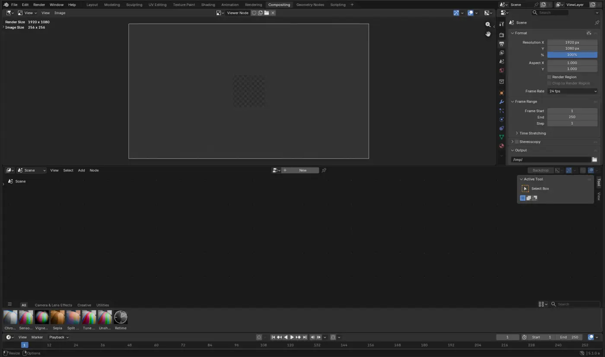

Change the room
The task determined the tools and layout: drawing, building, painting, lighting, filming, or editing.
Start with the editable technique workshop above. Reuse your model in the next lesson. The detailed walkthrough below uses Blender; choose another app using Tool Rosetta and the transfer checklist above.
Why one program contains many rooms
Traditional projects moved between specialist spaces: drafting table, model shop, sculpture stand, photo studio, editing room, and laboratory. Early computer graphics systems were also divided among separate programs and expensive machines. Integrated 3D suites connected those stages around one scene and one set of assets.
The task determined the tools and layout: drawing, building, painting, lighting, filming, or editing.
Specialized modeling, rendering, painting, and editing systems exchanged data between departments.
Modern tabs rearrange editors around the same project, keeping the production stages connected.
Map the analogy: Which physical studio does each workspace resemble, and which shared scene data travels with you?
Blender context: Blender Foundation: the software’s development from an in-house animation tool
Same file, different toolset
Clicking Sculpting doesn't change your file — it swaps which editors are on screen and which tool is active, so the ones that matter for sculpting are already open. You could assemble any of these by hand from the same building blocks (a 3D Viewport, a node editor, a timeline); the tabs just save you the setup.

The Interface & Navigation lesson lives in Layout. Every build lesson in the Blender Fundamentals Pathway works in Modeling. Materials, Lighting & Render covers both Shading and Rendering. This pathway fills in the tabs that pathway doesn't reach.
Tab-to-lesson map
In tab-bar order. Live cards link straight to a direct tutorial; the rest are honestly marked as not built yet instead of linking somewhere that doesn't fit.
Just-in-time references
Do not try to memorize the entire manual. Use these official sources when a lesson leaves you with a specific question, then return to your project and test the answer.
How workspaces work, and how to create or reorder your own — useful once you outgrow the defaults.
OFFICIAL REFERENCEBlender ManualSearch the exact tool or panel name when you need a deeper explanation or a setting has moved.
OFFICIAL SUPPORTSupport & bug reportingCommunity help, documentation, troubleshooting, and the correct path for reporting a reproducible Blender bug.
Every setting used by the Sculpting, Geometry Nodes, and Compositing lessons has an authentic Blender image or an explicit editor-and-menu breadcrumb. See the setting audit for the complete inventory and official references.